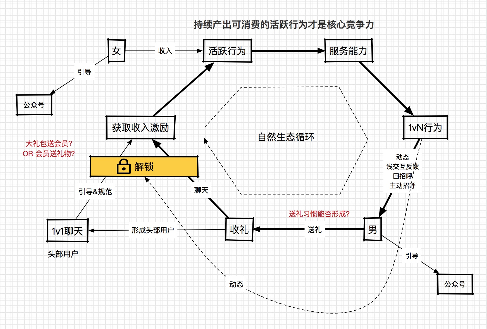
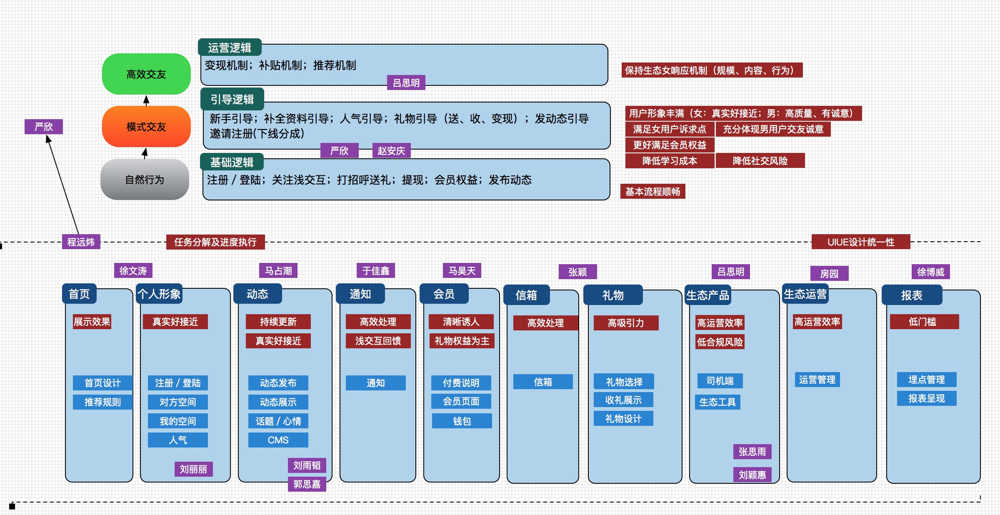

国内社交产品的简析

目前国内移动社交产品呈三足鼎立之势，分别是：微信、QQ、微博，占据了国内80%以上的社交市场;紧随其后有陌陌，映客，贴吧。再其后有Faceu，探探，秒拍，知乎，豆瓣(排名参考了研报的数据)。这些占据了余下市场的80%，可以说国内社交产品已经被瓜分干净，后来者很难去撼动其地位。
而每一次的入围都需要一个新的契机，比如映客在17下架以及直播浪潮的掀起中脱颖而出。Faceu赶上AR相机用户尝鲜的小风口，所以说没有成功是随随便便的，它都是由市场，社会，人文等综合复杂环境中留下的最优秀的一个。
而映客与Faceu的出现，甚至打车市场的滴滴，单车市场的ofo、摩拜的出现并非是偶然，而是必然，是互联网以及移动互联网的推动从而出现的必然产物。是在某一时间节点上一定会出现的剧情，社交剧情的主角可能不一定是微信也可能是Message、也可能是易信，但一定会出现同样的局势。
社交产品其本质就是具有社交属性的一个落地空间，从远古时代的部落，到现代的俱乐部，以及互联网、移动互联网社交产品其解决的问题之后一个，将合适的人聚合在一起传递信息与建立关系，而沟通的形式从面对面沟通，到邮件沟通，到及时信息沟通，演化出陌生人交友，语音，视频直播可以说形式和玩法在变，但其基本需求是不变的。
社交网络的出现大大降低了信息不对称的现象，从而也慢慢出现信息过载，信息爆炸，逐渐占用了用户更多的时间，那么将来社交产品的趋势就是帮助用户节省时间，更高效的沟通，更精准的内容推荐与用户推荐，更安全的隐私保护。
那么现在用户对社交产品的需求是怎样的，可以从目前社交产品的局势来分析出来：
- 及时通讯是用户在互联网上最基本也是最刚性的需求，所以微信，QQ稳坐前两位。
- 第二需求是信息需求，微博虽然也属于社交产品，但同样属于媒体产品，是带有社交属性的媒体产品，他与微信最大的区别在于信息的延展性够大，门槛够低，并且是以头部用户去驱动的弱关系链产品。而用户使用互联网，媒体信息对于用户来说也是一定的刚需，互联网他最大的特点就是给用户更快捷获取信息的途径，也是用户依赖于互联网生活的原因。
- 第三需求就是用户对异性的需求，可见陌陌，映客，探探等产品能够占用大量用户的原因，这一部分群体的内驱动力及付费转化较强，尤其以婚恋社交市场为重，单个用户的LTV(用户终身价值)是很高的。
- 第四需求为兴趣需求，代表的产品还有贴吧，知乎，秒拍，豆瓣等这类产品的特点是用户群体多以少众或少众群体的聚合体的形式存在，而这些产品能够自我生成独特的产品文化及产品情怀，也能够给予用户更多的吸引力去长时间的沉浸其中，因为更多是以兴趣去驱动的。
有些产品需要通过产品方案及用户体验上制胜如微信，映客，Faceu，豆瓣，而有些产品需要运营制胜，如微博，知乎，贴吧。但实际上社交产品是对产品以及运营考验较大的一个产品类型，是需要相辅相成缺一不可，他需要抓住并了解人性，而人却是最大的变数，如果不能够持续迭代以及跟进新的方向，会逐渐被淘汰。
曾经我一度认为用户体验是社交产品获胜的最大因素，鄙视UI差，交互烂，功能臃肿的产品。实际上用户体验是很重要的，但前提是该产品处在正确的方向上，那么如果产品的定位是错的，用户体验再好也不会有任何卵用。若在正确的定位及方向中与同类产品相比有更好的用户体验，加上良好的运营手段结果也不会很差。
社交产品是存在强马太效应的，大家用的越多就会越有人玩。当全国都在用微信的时候，就算QQ也无法撼动微信的领地，导致QQ目前更多的是工作场景使用，未成年群体会使用，而微信与QQ之间的用户规模差距会持续的拉大，因为微信是强关系产品其迁移成本是最高的。并且社交产品的壁垒除了马太效应外还有文化壁垒，如国内的微信很难打入国外，国外的Whatsapp也很难打入国内，所以当国内国外同类产品不存在太大的实力差距时，很难会找到突破口，我个人相信即便中国每个人都可以翻墙，微信依然是主流。
社交产品是目前创业成功率最低的品类之一，大部分产品都会停留在A轮以前，而鲜有进入B轮以后。因为社交产品其商业化的转化率相比其他产品是略逊色的，主要因其缺少更多的付费场景，很难平衡CAC(用户获取成本)与LTV之间的关系，所以很多初创社交产品脱离了资本很难自造血运作，易夭折。再者社交领域创业公司众多，虽然各有各的特色但无法戳中用户真正的痛点，过于小众或伪需求。
腾讯QQ当年除了增值服务外，更多是靠QQ大量的 用户向其子产品腾讯游戏进行导流，来间接盈利。而目前的微信也更多会采用这种方法，除了少量的广告外去做平台，去做流量入口，做游戏来间接的盈利。进入2015年至2016年，手机直播的火热给予了广大社交产品一个新的付费场景，使得微博，QQ，陌陌等社交产品都杀入到了直播领域，靠着自有的用户基数为直播产品导入用户，产生经济价值。而无论产品的商业模式有多么眼花缭乱其最有效途径第一就是广告，第二就是增值服务。
最近一直在使用SAME和豆瓣，他们是很有调性的产品，使用它与使用贴吧，知乎的感觉是相似的，但体验是不同的，因为人群不同，定位不同，产品具有的文化不同。当一个社交产品变得小众化后就会生成它特有的文化，产生内部的良性循环，产生用户粘性。若这款产品不再小众，不再单纯其未来的形态是很难想象的，或许会丢失初始的那批忠实的用户
。随着自己的年龄越来越大，所处的环境变了，所想以及感兴趣的事情变了，我所使用的社交产品也在变化，从QQ、贴吧到微信，微博。每个产品都有他适合的用户群体，它的定位决定他能吸引怎样的用户，曾经我是不爱玩微博的，因为在微博发内容基本都会石沉大海，没有粉丝的互动，更多是自己无病呻吟，所以喜欢泡在贴吧，豆瓣中，而慢慢的随着微信好友越来越多，随着不喜欢发更多的内容让朋友圈看到，就会想到另一个平台去发自己感兴趣的内容，我个人不是对明星大V很感兴趣的，比较喜欢动漫，游戏，企业，社会等相关的内容，也喜欢看北京周边都有哪些事情，以及我的身边都有哪些人在发微博。
我觉得我会一直从事社交产品领域的工作，从大学到毕业到工作，每一段工作都与社交产品相关，或许我是真正喜欢这个方向，我希望我从事的产品自己也能够使用。我经常告诉其他初入产品的人，不要看哪个领域热门，看你喜欢哪个方向的产品，你喜欢你才能做好。因为你就是用户，你需要更懂你的用户。
我曾经一直在媒体，知乎，书本看很多产品的方法论，但其实产品最重要的是同理心，是你需要足够了解你的用户，这其实是产品经理的基本功，也是能够体现出你的核心竞争力的地方，而基于你对用户的了解、理解可延展而出需求的把控，筛选。优秀的产品经理是具有很扎实的基本功，一切大而悬的战略都离不开最基础的理论实践。
专案演讲

产品优势主要由两点，对比其他产品，有独有的设计和先进的制造工艺，并使用了极致的原材料和设计，体现了产品的高品质。
品牌强调品质优势，从高品质产品延展到高品质生活，并体现到女性用户追求高品质生活不妥协的生活态度。
在商业合作领域，同最大的垂直女性社区大姨吗的独家合作，能随时跟踪女性的身体状态，我们陪伴在女用户身边，给出最科学和合理的护理建议。
所以我们给出的品牌定位是： 不妥协的品质，只为呵护！
定位中有三个关键词： 不妥协，品质，呵护
品质： 不仅是代表了产品的高品质，还代表女性高品质的生活。
不妥协：代表女性用户对高品质生活不断追求的生活态度
呵护：品牌站在关爱女性的立场，不断给予用户健康，安全，安心的护理服务

对于品牌的优势：
花煦定位于高品质，服务高端市场，同竞品拉开区隔，进行差异化竞争
同时提供以定位相匹配的高品质产品做保证，不断强化高品质的定位
同最大的女性崔志社区的合作，让服务趋于定制化，人性化
品牌的劣势：
由于卫生棉条的品类属于市场导入区，用户接受程度和使用习惯还在慢慢培养中，离市场成熟尚有一段距离；
花煦的品牌知名度主要集中在女性用户较为活跃的垂直女性社区，大众女性对该品牌的认知度还比较低。
因此：通过专属定制卫生护理产品，提供安全、放心、天然、纯洁的呵护，为女性提供非凡的体验，必定赢得客户的信任。

3类用户对产品包括品牌，包装，品质，价格，和购买渠道的观感
由于品类的特殊性（私人护理产品和市场导入期），用户喜好度普遍集中在产品品质和购买渠道的便利性上
对于核心用户来说，由于对品牌的信赖，对于包装，品质，价格和渠道的接受程度都很高；
潜在用户和可转化用户对于品牌不了解，对品质，价格和购买渠道均处于不关心的程度。
大部分消费者，对产品的品牌及品质都不是很了解，因此未来除了要提升品牌的认知度以外，还要针对产品的独特品质进行宣传推广，以吸引潜在客户转化为核心用户，可转化用户提升为潜在发展客户。
工作周报 1120
本周工作重心在做用户使用流程的详细设计、执行分工和资源分配。
几点思考
基本假设：
- 内容运营产生形成丰富
新产品工作周报 1210
本周工作概要
- 本期的开发工作在顺利进行中，周五开发工作基本完成，做各种小改动和bug的修复。
- 15号的版本会搭载部分的引导逻辑，收送礼引导和完善资料的引导在接下来的一个版本中体现。
- 中旬放量的运营准备工作（数据埋点、渠道投放准备、冷启动准备、支付及提现等）。
- 对于产品的专业性，在第一期工作完成之后，UI将拿出两套新的风格方案，建立高逼格（现在偏红的方案将适合低端用户）
- 团队按初步分工开始工作，流程运转基本顺畅。已经同hrbp进行过沟通，逐步将目前的一线经理进行专业系列和管理系列的区分，为后期的架构扩展做准备。
- 本周建立了分享和培训的沟通机制，效果还可以。 拟在下周由各模块负责人分享如果通过设计方案实现目标，1方面检查各模块负责人明确目标，2方面让各组的人知道兄弟部门的目标怎么和整体目标的关联来统一思想。
- 由于一直处在冲刺状态，团队人员在一定程度呈现部分疲态，我这边尽力和每个团队沟通，给予肯定打气，也希望人资和行政对部门多进行一些形式上的人文关怀和口头上的激励。
组织管理
从全团队的思想上，我目前将整个文化导向变成由产品驱动的生态的建设作为口径宣传，生态不能建立，整个项目对于公司来讲就失去意义，所有的团队的目标导向基本以自然用户的循环作为基础。
让我感动的一点是团队的核心人员开始觉得整个产品的构架变得越来越有意思和挑战，大家也会积极的从各方面进行思考。技术团队加上赵安庆，吕思明，马占潮，马昊天等小同学都非常积极的参与到项目之中，像严欣、程远炜、张颖能发挥重要作用，但热情比起小同学还是明显不足，请假比较多，无法取到较好的带头作用，这个也让我很头疼，下周我会对这几个人逐步进行愿景和价值观的沟通。
风险
女用户循环能否建立
通过分析，收入刺激女用户的产生行为应该没有太大的问题，唯一的问题是这些刺激（人均30-50）产生的行为是否能提供足够的服务能力，这个是我最担心的一个问题，需要加紧时间进行验证。 引导逻辑将全力围绕女用户循环全力推进。

组织能力是否成为短板
- 按目前的分工，模块层的人偏多。好在是严欣目前对方案控制的很细，同时并行有助于第一期的开发进度。后期会按组织效果进行相应调整。
- 本周比较注重同一线经理的沟通，目前各一线经理的工作状态和士气都不错。
- 本周开始，在下班时间多进行业务话题的讨论及培训工作，以应对长期加班引发的疲劳感。
